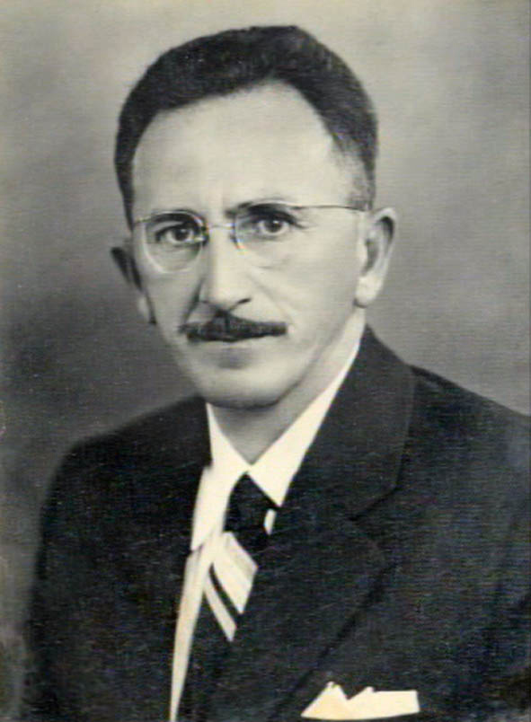
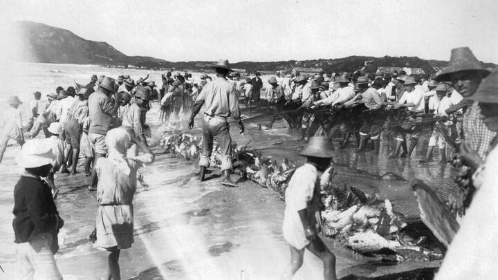
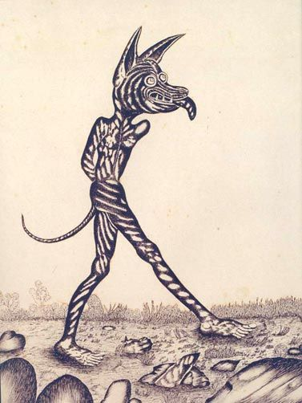
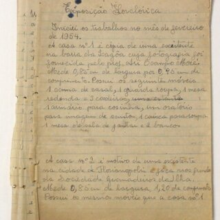
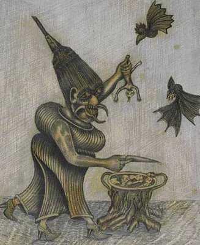
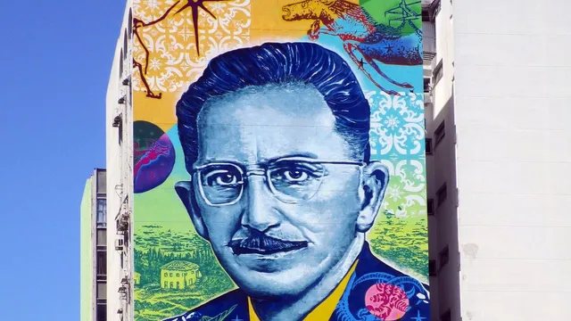
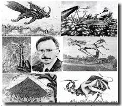

1. Introdução
Franklin Joaquim Cascaes (1908–1983) foi um pesquisador, antropólogo, ceramista, folclorista,
gravador e escritor brasileiro, considerado um dos principais guardiões da cultura açoriana no sul do Brasil.
Dedicou sua vida a resgatar as tradições, mitos, lendas e costumes do povo da Ilha de Santa Catarina,
registrando sua visão em esculturas, desenhos, manuscritos e relatos que hoje constituem um acervo inestimável.
Por meio de sua obra, Cascaes não apenas reconstruiu o passado de uma comunidade insular,
mas também deu forma a um universo mágico e profundamente humano, onde convivem bruxas,
lobisomens, boitatás e pescadores que lutam contra as forças invisíveis do mar.
.jpg)
2. Contexto histórico e origens
Franklin Joaquim Cascaes nasceu em 16 de outubro de 1908, na praia de Itaguaçu, em São José,
região que hoje pertence ao município de Florianópolis, Santa Catarina. Filho de Joaquim Serafim Cascaes
e Maria Catarina Cascaes, vinha de uma família humilde e de ascendência açoriana.
Seus avós paternos trabalhavam em atividades tradicionais dessa cultura: pesca, agricultura,
produção de farinha e açúcar e criação de gado. Desde pequeno, Franklin viveu rodeado dos costumes,
da fala e das crenças que marcariam profundamente sua obra futura.
Durante a infância, demonstrou grande curiosidade pelas histórias contadas pelos mais velhos junto ao fogo,
narrativas povoadas de seres fantásticos e mistérios do mar. Essas vozes populares seriam,
anos depois, o núcleo essencial de seu trabalho como coletor do folclore insular.

4. A descoberta da cultura açoriana
Por volta de 1946, Cascaes iniciou o projeto de percorrer vilas da ilha de Santa Catarina para registrar vestígios da cultura açoriana.
Conviveu com pescadores, camponeses e idosos, transcrevendo relatos, costumes e orações com um sistema fonético próprio.
Durante trinta anos, preencheu centenas de cadernos com notas, desenhos e observações. No entanto, seu trabalho foi desprezado
por acadêmicos, acusado de falta de rigor científico. Só na década de 1970 sua obra ganhou reconhecimento.

5. Produção artística e literária
A obra de Cascaes inclui esculturas, gravuras, desenhos, manuscritos e crônicas. Seu acervo conta com cerca de
3.000 peças artesanais, 400 gravuras, 400 desenhos e numerosos manuscritos.
Entre seus livros mais conhecidos estão O Fantástico na Ilha de Santa Catarina (vol. 1 e 2),
com contos como:
- Balanço da pirueta voadora
- Nossa Senhora, o linguado e o siri
- A Bruxa metamorfoseou o sapato
- Balé das mulheres bruxas
- O Boitatá
- Mulheres bruxas atacando cavalos

6. Os manuscritos e seu valor histórico
Os manuscritos de Cascaes incluem 124 cadernos pequenos, 22 grandes e 476 textos soltos com versos,
reflexões sobre política, arte, cartas e críticas ao progresso e à destruição da natureza.
Ele sonhava com a criação de um museu para preservar sua obra – algo que se concretizou parcialmente
com o Museu de Arqueologia e Etnologia Oswaldo Cabral.

7. Lendas e personagens do imaginário
As bruxas: protagonistas nas lendas coletadas por Cascaes. Realizavam aquelarres,
cavalgavam vassouras, amarravam crinas de cavalos e podiam ser terrestres ou espirituais.
O Boitatá: serpente de fogo que percorre praias à meia-noite. Cascaes registrou o ritual para espantá-lo.
Os lobisomens: segundo relatos, surgiam quando alguém rolava nu sobre o corpo de um animal morto.
Representavam medos, moralidade e mistérios da ilha.

8. Reconhecimento, legado e homenagens
A partir de 1974, sua obra ganhou notoriedade. Em 1991, surgiu a minissérie Ilha das Bruxas.
Em 2008 foi lançado Treze Cascaes, e em 2017 uma grande obra urbana o homenageou
no centro de Florianópolis.
Hoje é símbolo do “espírito da ilha da magia”, e sua obra inspira artistas, pesquisadores e moradores.

9. Conclusão
Cascaes foi mais que artista: foi um antropólogo da alma popular. Seu legado documenta uma cultura oral
que poderia ter desaparecido. Suas bruxas, boitatás e lobisomens mostram que a magia é uma forma de memória,
preservando a essência humana.